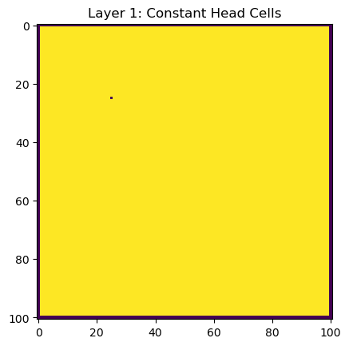
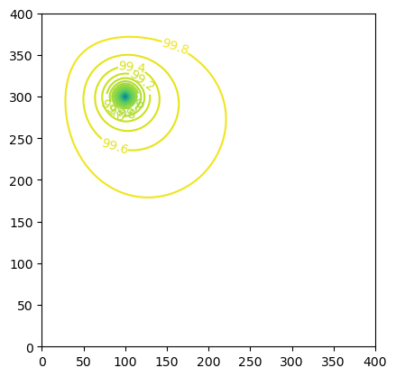
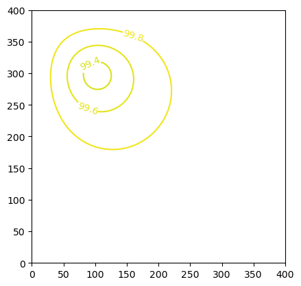
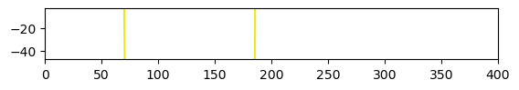
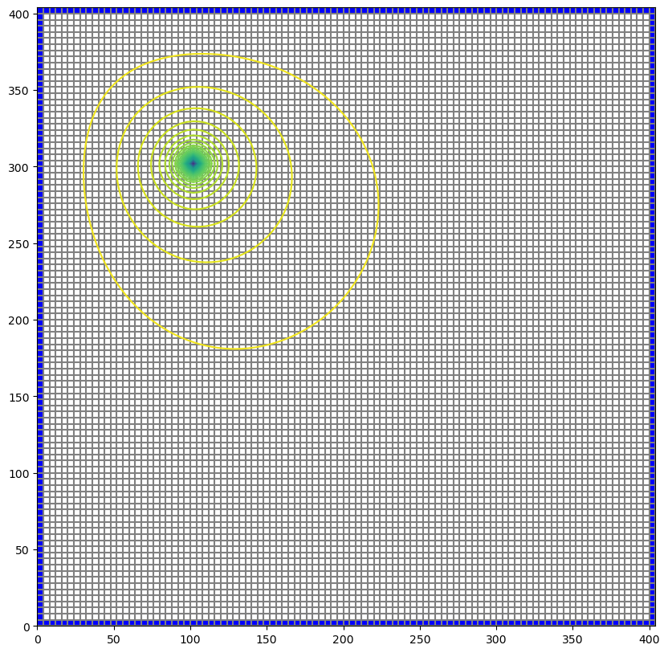

Note
Creating a Simple MODFLOW 6 Model with Flopy
The purpose of this notebook is to demonstrate the Flopy capabilities for building a simple MODFLOW 6 model from scratch, running the model, and viewing the results. This notebook will demonstrate the capabilities using a simple lake example. A separate notebook is also available in which the same lake example is created for MODFLOW-2005 (flopy3_lake_example.ipynb).
Setup the Notebook Environment
[1]:
import sys
import os
from tempfile import TemporaryDirectory
import numpy as np
import matplotlib as mpl
import matplotlib.pyplot as plt
# run installed version of flopy or add local path
try:
import flopy
except:
fpth = os.path.abspath(os.path.join("..", ".."))
sys.path.append(fpth)
import flopy
print(sys.version)
print("numpy version: {}".format(np.__version__))
print("matplotlib version: {}".format(mpl.__version__))
print("flopy version: {}".format(flopy.__version__))
3.10.10 | packaged by conda-forge | (main, Mar 24 2023, 20:08:06) [GCC 11.3.0]
numpy version: 1.24.3
matplotlib version: 3.7.1
flopy version: 3.3.7
[2]:
# For this example, we will set up a temporary workspace.
# Model input files and output files will reside here.
temp_dir = TemporaryDirectory()
workspace = os.path.join(temp_dir.name, "mf6lake")
Create the Flopy Model Objects
We are creating a square model with a specified head equal to h1 along all boundaries. The head at the cell in the center in the top layer is fixed to h2. First, set the name of the model and the parameters of the model: the number of layers Nlay, the number of rows and columns N, lengths of the sides of the model L, aquifer thickness H, hydraulic conductivity k
[3]:
name = "mf6lake"
h1 = 100
h2 = 90
Nlay = 10
N = 101
L = 400.0
H = 50.0
k = 1.0
One big difference between MODFLOW 6 and previous MODFLOW versions is that MODFLOW 6 is based on the concept of a simulation. A simulation consists of the following:
Temporal discretization (TDIS)
One or more models (GWF is the only model supported at present)
Zero or more exchanges (instructions for how models are coupled)
Solutions
For this simple lake example, the simulation consists of the temporal discretization (TDIS) package (TDIS), a groundwater flow (GWF) model, and an iterative model solution (IMS), which controls how the GWF model is solved.
[4]:
# Create the Flopy simulation object
sim = flopy.mf6.MFSimulation(
sim_name=name, exe_name="mf6", version="mf6", sim_ws=workspace
)
# Create the Flopy temporal discretization object
tdis = flopy.mf6.modflow.mftdis.ModflowTdis(
sim, pname="tdis", time_units="DAYS", nper=1, perioddata=[(1.0, 1, 1.0)]
)
# Create the Flopy groundwater flow (gwf) model object
model_nam_file = "{}.nam".format(name)
gwf = flopy.mf6.ModflowGwf(sim, modelname=name, model_nam_file=model_nam_file)
# Create the Flopy iterative model solver (ims) Package object
ims = flopy.mf6.modflow.mfims.ModflowIms(sim, pname="ims", complexity="SIMPLE")
Now that the overall simulation is set up, we can focus on building the groundwater flow model. The groundwater flow model will be built by adding packages to it that describe the model characteristics.
Define the discretization of the model. All layers are given equal thickness. The bot array is build from H and the Nlay values to indicate top and bottom of each layer, and delrow and delcol are computed from model size L and number of cells N. Once these are all computed, the Discretization file is built.
[5]:
# Create the discretization package
bot = np.linspace(-H / Nlay, -H, Nlay)
delrow = delcol = L / (N - 1)
dis = flopy.mf6.modflow.mfgwfdis.ModflowGwfdis(
gwf,
pname="dis",
nlay=Nlay,
nrow=N,
ncol=N,
delr=delrow,
delc=delcol,
top=0.0,
botm=bot,
)
[6]:
# Create the initial conditions package
start = h1 * np.ones((Nlay, N, N))
ic = flopy.mf6.modflow.mfgwfic.ModflowGwfic(gwf, pname="ic", strt=start)
[7]:
# Create the node property flow package
npf = flopy.mf6.modflow.mfgwfnpf.ModflowGwfnpf(
gwf, pname="npf", icelltype=1, k=k, save_flows=True
)
[8]:
# Create the constant head package.
# List information is created a bit differently for
# MODFLOW 6 than for other MODFLOW versions. The
# cellid (layer, row, column, for a regular grid)
# must be entered as a tuple as the first entry.
# Remember that these must be zero-based indices!
chd_rec = []
chd_rec.append(((0, int(N / 4), int(N / 4)), h2))
for layer in range(0, Nlay):
for row_col in range(0, N):
chd_rec.append(((layer, row_col, 0), h1))
chd_rec.append(((layer, row_col, N - 1), h1))
if row_col != 0 and row_col != N - 1:
chd_rec.append(((layer, 0, row_col), h1))
chd_rec.append(((layer, N - 1, row_col), h1))
chd = flopy.mf6.modflow.mfgwfchd.ModflowGwfchd(
gwf,
pname="chd",
maxbound=len(chd_rec),
stress_period_data=chd_rec,
save_flows=True,
)
[9]:
# The chd package stored the constant heads in a structured
# array, also called a recarray. We can get a pointer to the
# recarray for the first stress period (iper = 0) as follows.
iper = 0
ra = chd.stress_period_data.get_data(key=iper)
ra
[9]:
rec.array([((0, 25, 25), 90.), ((0, 0, 0), 100.), ((0, 0, 100), 100.),
..., ((9, 100, 99), 100.), ((9, 100, 0), 100.),
((9, 100, 100), 100.)],
dtype=[('cellid', 'O'), ('head', '<f8')])
[10]:
# We can make a quick plot to show where our constant
# heads are located by creating an integer array
# that starts with ones everywhere, but is assigned
# a -1 where chds are located
ibd = np.ones((Nlay, N, N), dtype=int)
for k, i, j in ra["cellid"]:
ibd[k, i, j] = -1
ilay = 0
plt.imshow(ibd[ilay, :, :], interpolation="none")
plt.title("Layer {}: Constant Head Cells".format(ilay + 1))
[10]:
Text(0.5, 1.0, 'Layer 1: Constant Head Cells')

[11]:
# Create the output control package
headfile = "{}.hds".format(name)
head_filerecord = [headfile]
budgetfile = "{}.cbb".format(name)
budget_filerecord = [budgetfile]
saverecord = [("HEAD", "ALL"), ("BUDGET", "ALL")]
printrecord = [("HEAD", "LAST")]
oc = flopy.mf6.modflow.mfgwfoc.ModflowGwfoc(
gwf,
pname="oc",
saverecord=saverecord,
head_filerecord=head_filerecord,
budget_filerecord=budget_filerecord,
printrecord=printrecord,
)
[12]:
# Note that help can always be found for a package
# using either forms of the following syntax
help(oc)
# help(flopy.mf6.modflow.mfgwfoc.ModflowGwfoc)
Help on ModflowGwfoc in module flopy.mf6.modflow.mfgwfoc object:
class ModflowGwfoc(flopy.mf6.mfpackage.MFPackage)
| ModflowGwfoc(model, loading_package=False, budget_filerecord=None, budgetcsv_filerecord=None, head_filerecord=None, headprintrecord=None, saverecord=None, printrecord=None, filename=None, pname=None, **kwargs)
|
| ModflowGwfoc defines a oc package within a gwf6 model.
|
| Parameters
| ----------
| model : MFModel
| Model that this package is a part of. Package is automatically
| added to model when it is initialized.
| loading_package : bool
| Do not set this parameter. It is intended for debugging and internal
| processing purposes only.
| budget_filerecord : [budgetfile]
| * budgetfile (string) name of the output file to write budget
| information.
| budgetcsv_filerecord : [budgetcsvfile]
| * budgetcsvfile (string) name of the comma-separated value (CSV) output
| file to write budget summary information. A budget summary record
| will be written to this file for each time step of the simulation.
| head_filerecord : [headfile]
| * headfile (string) name of the output file to write head information.
| headprintrecord : [columns, width, digits, format]
| * columns (integer) number of columns for writing data.
| * width (integer) width for writing each number.
| * digits (integer) number of digits to use for writing a number.
| * format (string) write format can be EXPONENTIAL, FIXED, GENERAL, or
| SCIENTIFIC.
| saverecord : [rtype, ocsetting]
| * rtype (string) type of information to save or print. Can be BUDGET or
| HEAD.
| * ocsetting (keystring) specifies the steps for which the data will be
| saved.
| all : [keyword]
| * all (keyword) keyword to indicate save for all time steps in
| period.
| first : [keyword]
| * first (keyword) keyword to indicate save for first step in
| period. This keyword may be used in conjunction with other
| keywords to print or save results for multiple time steps.
| last : [keyword]
| * last (keyword) keyword to indicate save for last step in
| period. This keyword may be used in conjunction with other
| keywords to print or save results for multiple time steps.
| frequency : [integer]
| * frequency (integer) save at the specified time step
| frequency. This keyword may be used in conjunction with other
| keywords to print or save results for multiple time steps.
| steps : [integer]
| * steps (integer) save for each step specified in STEPS. This
| keyword may be used in conjunction with other keywords to
| print or save results for multiple time steps.
| printrecord : [rtype, ocsetting]
| * rtype (string) type of information to save or print. Can be BUDGET or
| HEAD.
| * ocsetting (keystring) specifies the steps for which the data will be
| saved.
| all : [keyword]
| * all (keyword) keyword to indicate save for all time steps in
| period.
| first : [keyword]
| * first (keyword) keyword to indicate save for first step in
| period. This keyword may be used in conjunction with other
| keywords to print or save results for multiple time steps.
| last : [keyword]
| * last (keyword) keyword to indicate save for last step in
| period. This keyword may be used in conjunction with other
| keywords to print or save results for multiple time steps.
| frequency : [integer]
| * frequency (integer) save at the specified time step
| frequency. This keyword may be used in conjunction with other
| keywords to print or save results for multiple time steps.
| steps : [integer]
| * steps (integer) save for each step specified in STEPS. This
| keyword may be used in conjunction with other keywords to
| print or save results for multiple time steps.
| filename : String
| File name for this package.
| pname : String
| Package name for this package.
| parent_file : MFPackage
| Parent package file that references this package. Only needed for
| utility packages (mfutl*). For example, mfutllaktab package must have
| a mfgwflak package parent_file.
|
| Method resolution order:
| ModflowGwfoc
| flopy.mf6.mfpackage.MFPackage
| flopy.mf6.mfbase.PackageContainer
| flopy.pakbase.PackageInterface
| builtins.object
|
| Methods defined here:
|
| __init__(self, model, loading_package=False, budget_filerecord=None, budgetcsv_filerecord=None, head_filerecord=None, headprintrecord=None, saverecord=None, printrecord=None, filename=None, pname=None, **kwargs)
| Initialize self. See help(type(self)) for accurate signature.
|
| ----------------------------------------------------------------------
| Data and other attributes defined here:
|
| budget_filerecord = <flopy.mf6.data.mfdatautil.ListTemplateGenerator o...
|
| budgetcsv_filerecord = <flopy.mf6.data.mfdatautil.ListTemplateGenerato...
|
| dfn = [['header'], ['block options', 'name budget_filerecord', 'type r...
|
| dfn_file_name = 'gwf-oc.dfn'
|
| head_filerecord = <flopy.mf6.data.mfdatautil.ListTemplateGenerator obj...
|
| headprintrecord = <flopy.mf6.data.mfdatautil.ListTemplateGenerator obj...
|
| package_abbr = 'gwfoc'
|
| printrecord = <flopy.mf6.data.mfdatautil.ListTemplateGenerator object>
|
| saverecord = <flopy.mf6.data.mfdatautil.ListTemplateGenerator object>
|
| ----------------------------------------------------------------------
| Methods inherited from flopy.mf6.mfpackage.MFPackage:
|
| __repr__(self)
| Return repr(self).
|
| __setattr__(self, name, value)
| Implement setattr(self, name, value).
|
| __str__(self)
| Return str(self).
|
| build_child_package(self, pkg_type, data, parameter_name, filerecord)
| Builds a child package. This method is only intended for FloPy
| internal use.
|
| build_child_packages_container(self, pkg_type, filerecord)
| Builds a container object for any child packages. This method is
| only intended for FloPy internal use.
|
| build_mfdata(self, var_name, data=None)
| Returns the appropriate data type object (mfdatalist, mfdataarray,
| or mfdatascalar) given that object the appropriate structure (looked
| up based on var_name) and any data supplied. This method is for
| internal FloPy library use only.
|
| Parameters
| ----------
| var_name : str
| Variable name
|
| data : many supported types
| Data contained in this object
|
| Returns
| -------
| data object : MFData subclass
|
| check(self, f=None, verbose=True, level=1, checktype=None)
| Data check, returns True on success.
|
| create_package_dimensions(self)
| Creates a package dimensions object. For internal FloPy library
| use.
|
| Returns
| -------
| package dimensions : PackageDimensions
|
| export(self, f, **kwargs)
| Method to export a package to netcdf or shapefile based on the
| extension of the file name (.shp for shapefile, .nc for netcdf)
|
| Parameters
| ----------
| f : str
| Filename
| kwargs : keyword arguments
| modelgrid : flopy.discretization.Grid instance
| User supplied modelgrid which can be used for exporting
| in lieu of the modelgrid associated with the model object
|
| Returns
| -------
| None or Netcdf object
|
| get_file_path(self)
| Returns the package file's path.
|
| Returns
| -------
| file path : str
|
| inspect_cells(self, cell_list, stress_period=None)
| Inspect model cells. Returns package data associated with cells.
|
| Parameters
| ----------
| cell_list : list of tuples
| List of model cells. Each model cell is a tuple of integers.
| ex: [(1,1,1), (2,4,3)]
| stress_period : int
| For transient data, only return data from this stress period. If
| not specified or None, all stress period data will be returned.
|
| Returns
| -------
| output : array
| Array containing inspection results
|
| is_valid(self)
| Returns whether or not this package is valid.
|
| Returns
| -------
| is valid : bool
|
| load(self, strict=True)
| Loads the package from file.
|
| Parameters
| ----------
| strict : bool
| Enforce strict checking of data.
|
| Returns
| -------
| success : bool
|
| plot(self, **kwargs)
| Plot 2-D, 3-D, transient 2-D, and stress period list (MfList)
| package input data
|
| Parameters
| ----------
| **kwargs : dict
| filename_base : str
| Base file name that will be used to automatically generate
| file names for output image files. Plots will be exported as
| image files if file_name_base is not None. (default is None)
| file_extension : str
| Valid matplotlib.pyplot file extension for savefig(). Only
| used if filename_base is not None. (default is 'png')
| mflay : int
| MODFLOW zero-based layer number to return. If None, then all
| all layers will be included. (default is None)
| kper : int
| MODFLOW zero-based stress period number to return. (default is
| zero)
| key : str
| MfList dictionary key. (default is None)
|
| Returns
| ----------
| axes : list
| Empty list is returned if filename_base is not None. Otherwise
| a list of matplotlib.pyplot.axis are returned.
|
| remove(self)
| Removes this package from the simulation/model it is currently a
| part of.
|
| set_all_data_external(self, check_data=True, external_data_folder=None)
| Sets the package's list and array data to be stored externally.
|
| Parameters
| ----------
| check_data : bool
| Determine if data error checking is enabled
| external_data_folder
| Folder where external data will be stored
|
| set_all_data_internal(self, check_data=True)
| Sets the package's list and array data to be stored internally.
|
| Parameters
| ----------
| check_data : bool
| Determine if data error checking is enabled
|
| set_model_relative_path(self, model_ws)
| Sets the model path relative to the simulation's path.
|
| Parameters
| ----------
| model_ws : str
| Model path relative to the simulation's path.
|
| write(self, ext_file_action=<ExtFileAction.copy_relative_paths: 3>)
| Writes the package to a file.
|
| Parameters
| ----------
| ext_file_action : ExtFileAction
| How to handle pathing of external data files.
|
| ----------------------------------------------------------------------
| Class methods inherited from flopy.mf6.mfpackage.MFPackage:
|
| __init_subclass__() from builtins.type
| Register package type
|
| ----------------------------------------------------------------------
| Readonly properties inherited from flopy.mf6.mfpackage.MFPackage:
|
| data_list
| List of data in this package.
|
| output
| Method to get output associated with a specific package
|
| Returns
| -------
| MF6Output object
|
| package_type
| String describing type of package
|
| plottable
| If package is plottable
|
| quoted_filename
| Package's file name with quotes if there is a space.
|
| ----------------------------------------------------------------------
| Data descriptors inherited from flopy.mf6.mfpackage.MFPackage:
|
| filename
| Package's file name.
|
| name
| Name of package
|
| parent
| Parent package
|
| ----------------------------------------------------------------------
| Methods inherited from flopy.mf6.mfbase.PackageContainer:
|
| get_package(self, name=None)
| Finds a package by package name, package key, package type, or partial
| package name. returns either a single package, a list of packages,
| or None.
|
| Parameters
| ----------
| name : str
| Name of the package, 'RIV', 'LPF', etc.
|
| Returns
| -------
| pp : Package object
|
| register_package(self, package)
| Base method for registering a package. Should be overridden.
|
| ----------------------------------------------------------------------
| Static methods inherited from flopy.mf6.mfbase.PackageContainer:
|
| get_module_val(module, item, attrb)
| Static method that returns a python class module value. For
| internal FloPy use only, not intended for end users.
|
| model_factory(model_type)
| Static method that returns the appropriate model type object based
| on the model_type string. For internal FloPy use only, not intended
| for end users.
|
| Parameters
| ----------
| model_type : str
| Type of model that package is a part of
|
| Returns
| -------
| model : MFModel subclass
|
| package_factory(package_type: str, model_type: str)
| Static method that returns the appropriate package type object based
| on the package_type and model_type strings. For internal FloPy use
| only, not intended for end users.
|
| Parameters
| ----------
| package_type : str
| Type of package to create
| model_type : str
| Type of model that package is a part of
|
| Returns
| -------
| package : MFPackage subclass
|
| package_list()
| Static method that returns the list of available packages.
| For internal FloPy use only, not intended for end users.
|
| Returns a list of MFPackage subclasses
|
| ----------------------------------------------------------------------
| Readonly properties inherited from flopy.mf6.mfbase.PackageContainer:
|
| package_dict
| Returns a copy of the package name dictionary.
|
| package_key_dict
|
| package_names
| Returns a list of package names.
|
| ----------------------------------------------------------------------
| Data descriptors inherited from flopy.mf6.mfbase.PackageContainer:
|
| __dict__
| dictionary for instance variables (if defined)
|
| __weakref__
| list of weak references to the object (if defined)
|
| ----------------------------------------------------------------------
| Data and other attributes inherited from flopy.mf6.mfbase.PackageContainer:
|
| models_by_type = {'gwf': <class 'flopy.mf6.modflow.mfgwf.ModflowGwf'>,...
|
| modflow_models = [<class 'flopy.mf6.modflow.mfgwf.ModflowGwf'>, <class...
|
| modflow_packages = [<class 'flopy.mf6.modflow.mfnam.ModflowNam'>, <cla...
|
| packages_by_abbr = {'gnc': <class 'flopy.mf6.modflow.mfgnc.ModflowGnc'...
|
| ----------------------------------------------------------------------
| Readonly properties inherited from flopy.pakbase.PackageInterface:
|
| has_stress_period_data
Create the MODFLOW 6 Input Files and Run the Model
Once all the flopy objects are created, it is very easy to create all of the input files and run the model.
[13]:
# Write the datasets
sim.write_simulation()
writing simulation...
writing simulation name file...
writing simulation tdis package...
writing solution package ims...
writing model mf6lake...
writing model name file...
writing package dis...
writing package ic...
writing package npf...
writing package chd...
writing package oc...
[14]:
# Print a list of the files that were created
# in workspace
print(os.listdir(workspace))
['mf6lake.nam', 'mf6lake.ic', 'mf6lake.dis', 'mfsim.nam', 'mf6lake.oc', 'mf6lake.tdis', 'mf6lake.ims', 'mf6lake.chd', 'mf6lake.npf']
Run the Simulation
We can also run the simulation from the notebook, but only if the MODFLOW 6 executable is available. The executable can be made available by putting the executable in a folder that is listed in the system path variable. Another option is to just put a copy of the executable in the simulation folder, though this should generally be avoided. A final option is to provide a full path to the executable when the simulation is constructed. This would be done by specifying exe_name with the full path.
[15]:
# Run the simulation
success, buff = sim.run_simulation(silent=True, report=True)
if success:
for line in buff:
print(line)
else:
raise ValueError("Failed to run.")
MODFLOW 6
U.S. GEOLOGICAL SURVEY MODULAR HYDROLOGIC MODEL
VERSION 6.4.1 Release 12/09/2022
MODFLOW 6 compiled Apr 12 2023 19:02:29 with Intel(R) Fortran Intel(R) 64
Compiler Classic for applications running on Intel(R) 64, Version 2021.7.0
Build 20220726_000000
This software has been approved for release by the U.S. Geological
Survey (USGS). Although the software has been subjected to rigorous
review, the USGS reserves the right to update the software as needed
pursuant to further analysis and review. No warranty, expressed or
implied, is made by the USGS or the U.S. Government as to the
functionality of the software and related material nor shall the
fact of release constitute any such warranty. Furthermore, the
software is released on condition that neither the USGS nor the U.S.
Government shall be held liable for any damages resulting from its
authorized or unauthorized use. Also refer to the USGS Water
Resources Software User Rights Notice for complete use, copyright,
and distribution information.
Run start date and time (yyyy/mm/dd hh:mm:ss): 2023/05/04 16:00:51
Writing simulation list file: mfsim.lst
Using Simulation name file: mfsim.nam
Solving: Stress period: 1 Time step: 1
Run end date and time (yyyy/mm/dd hh:mm:ss): 2023/05/04 16:00:51
Elapsed run time: 0.568 Seconds
Normal termination of simulation.
Post-Process Head Results
Post-processing MODFLOW 6 results is still a work in progress. There aren’t any Flopy plotting functions built in yet, like they are for other MODFLOW versions. So we need to plot the results using general Flopy capabilities. We can also use some of the Flopy ModelMap capabilities for MODFLOW 6, but in order to do so, we need to manually create a SpatialReference object, that is needed for the plotting. Examples of both approaches are shown below.
First, a link to the heads file is created with HeadFile. The link can then be accessed with the get_data function, by specifying, in this case, the step number and period number for which we want to retrieve data. A three-dimensional array is returned of size nlay, nrow, ncol. Matplotlib contouring functions are used to make contours of the layers or a cross-section.
[16]:
# Read the binary head file and plot the results
# We can use the existing Flopy HeadFile class because
# the format of the headfile for MODFLOW 6 is the same
# as for previous MODFLOW verions
fname = os.path.join(workspace, headfile)
hds = flopy.utils.binaryfile.HeadFile(fname)
h = hds.get_data(kstpkper=(0, 0))
x = y = np.linspace(0, L, N)
y = y[::-1]
c = plt.contour(x, y, h[0], np.arange(90, 100.1, 0.2))
plt.clabel(c, fmt="%2.1f")
plt.axis("scaled");

[17]:
x = y = np.linspace(0, L, N)
y = y[::-1]
c = plt.contour(x, y, h[-1], np.arange(90, 100.1, 0.2))
plt.clabel(c, fmt="%1.1f")
plt.axis("scaled");

[18]:
z = np.linspace(-H / Nlay / 2, -H + H / Nlay / 2, Nlay)
c = plt.contour(x, z, h[:, 50, :], np.arange(90, 100.1, 0.2))
plt.axis("scaled");

[19]:
# We can also use the Flopy PlotMapView capabilities for MODFLOW 6
fig = plt.figure(figsize=(10, 10))
ax = fig.add_subplot(1, 1, 1, aspect="equal")
modelmap = flopy.plot.PlotMapView(model=gwf, ax=ax)
# Then we can use the plot_grid() method to draw the grid
# The return value for this function is a matplotlib LineCollection object,
# which could be manipulated (or used) later if necessary.
quadmesh = modelmap.plot_ibound(ibound=ibd)
linecollection = modelmap.plot_grid()
contours = modelmap.contour_array(h[0], levels=np.arange(90, 100.1, 0.2))

[20]:
# We can also use the Flopy PlotMapView capabilities for MODFLOW 6
fig = plt.figure(figsize=(10, 10))
ax = fig.add_subplot(1, 1, 1, aspect="equal")
# Next we create an instance of the ModelMap class
modelmap = flopy.plot.PlotMapView(model=gwf, ax=ax)
# Then we can use the plot_grid() method to draw the grid
# The return value for this function is a matplotlib LineCollection object,
# which could be manipulated (or used) later if necessary.
quadmesh = modelmap.plot_ibound(ibound=ibd)
linecollection = modelmap.plot_grid()
pa = modelmap.plot_array(h[0])
cb = plt.colorbar(pa, shrink=0.5)

Post-Process Flows
MODFLOW 6 writes a binary grid file, which contains information about the model grid. MODFLOW 6 also writes a binary budget file, which contains flow information. Both of these files can be read using Flopy capabilities. The MfGrdFile class in Flopy can be used to read the binary grid file. The CellBudgetFile class in Flopy can be used to read the binary budget file written by MODFLOW 6.
[21]:
# read the binary grid file
fname = os.path.join(workspace, "{}.dis.grb".format(name))
bgf = flopy.mf6.utils.MfGrdFile(fname)
# data read from the binary grid file is stored in a dictionary
bgf._datadict
[21]:
{'NCELLS': 102010,
'NLAY': 10,
'NROW': 101,
'NCOL': 101,
'NJA': 689628,
'XORIGIN': 0.0,
'YORIGIN': 0.0,
'ANGROT': 0.0,
'DELR': array([4., 4., 4., 4., 4., 4., 4., 4., 4., 4., 4., 4., 4., 4., 4., 4., 4.,
4., 4., 4., 4., 4., 4., 4., 4., 4., 4., 4., 4., 4., 4., 4., 4., 4.,
4., 4., 4., 4., 4., 4., 4., 4., 4., 4., 4., 4., 4., 4., 4., 4., 4.,
4., 4., 4., 4., 4., 4., 4., 4., 4., 4., 4., 4., 4., 4., 4., 4., 4.,
4., 4., 4., 4., 4., 4., 4., 4., 4., 4., 4., 4., 4., 4., 4., 4., 4.,
4., 4., 4., 4., 4., 4., 4., 4., 4., 4., 4., 4., 4., 4., 4., 4.]),
'DELC': array([4., 4., 4., 4., 4., 4., 4., 4., 4., 4., 4., 4., 4., 4., 4., 4., 4.,
4., 4., 4., 4., 4., 4., 4., 4., 4., 4., 4., 4., 4., 4., 4., 4., 4.,
4., 4., 4., 4., 4., 4., 4., 4., 4., 4., 4., 4., 4., 4., 4., 4., 4.,
4., 4., 4., 4., 4., 4., 4., 4., 4., 4., 4., 4., 4., 4., 4., 4., 4.,
4., 4., 4., 4., 4., 4., 4., 4., 4., 4., 4., 4., 4., 4., 4., 4., 4.,
4., 4., 4., 4., 4., 4., 4., 4., 4., 4., 4., 4., 4., 4., 4., 4.]),
'TOP': array([0., 0., 0., ..., 0., 0., 0.]),
'BOTM': array([ -5., -5., -5., ..., -50., -50., -50.]),
'IA': array([ 1, 5, 10, ..., 689620, 689625, 689629], dtype=int32),
'JA': array([ 1, 2, 102, ..., 91809, 101909, 102009], dtype=int32),
'IDOMAIN': array([1, 1, 1, ..., 1, 1, 1], dtype=int32),
'ICELLTYPE': array([1, 1, 1, ..., 1, 1, 1], dtype=int32)}
[22]:
# read the cell budget file
fname = os.path.join(workspace, "{}.cbb".format(name))
cbb = flopy.utils.CellBudgetFile(fname, precision="double")
cbb.list_records()
flowja = cbb.get_data(text="FLOW-JA-FACE")[0][0, 0, :]
chdflow = cbb.get_data(text="CHD")[0]
(1, 1, b' FLOW-JA-FACE', 689628, 1, -1, 1, 1., 1., 1., b'', b'', b'', b'')
(1, 1, b' CHD', 101, 101, -10, 6, 1., 1., 1., b'MF6LAKE ', b'MF6LAKE ', b'MF6LAKE ', b'CHD ')
[23]:
# By having the ia and ja arrays and the flow-ja-face we can look at
# the flows for any cell and process them in the follow manner.
k = 5
i = 50
j = 50
celln = k * N * N + i * N + j
ia, ja = bgf.ia, bgf.ja
print("Printing flows for cell {}".format(celln))
for ipos in range(ia[celln] + 1, ia[celln + 1]):
cellm = ja[ipos]
print("Cell {} flow with cell {} is {}".format(celln, cellm, flowja[ipos]))
Printing flows for cell 56105
Cell 56105 flow with cell 45904 is -0.0002858449337963975
Cell 56105 flow with cell 56004 is -0.025019694309449392
Cell 56105 flow with cell 56104 is -0.025019694309449392
Cell 56105 flow with cell 56106 is 0.025058524820593675
Cell 56105 flow with cell 56206 is 0.02505852482066473
Cell 56105 flow with cell 66306 is 0.00033448625827077195
[24]:
try:
# ignore PermissionError on Windows
temp_dir.cleanup()
except:
pass